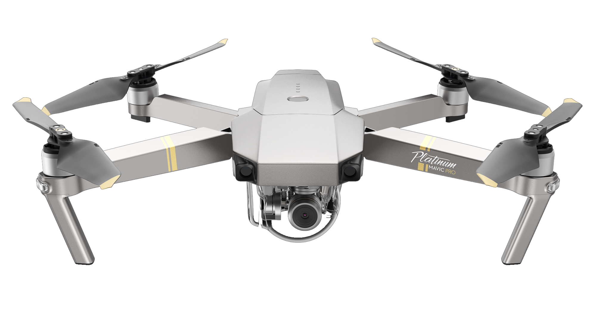

Mavic Pro Platinum

Description:
The Mavic Pro Platinum features a sleek design and compact body that
is both powerful and alluring. A new and improved 30-minute flight time coupled
with 60% noise power reduction makes the Mavic Pro Platinum DJI’s best portable drone yet.
Specs:
Size:
83 mm х 83 mm х 198 mm
Camera:
C4K: 4096×2160 24p
4K: 3840×2160 24/25/30p
2.7K: 2704×1520 24/25/30p
FHD: 1920×1080 24/25/30/48/50/60/96p
HD: 1280×720 24/25/30/48/50/60/120p
Battery
3830 mAh
More:
Vision System Forward Vision System
Downward Vision System
Obstacle Sensory Range Precision measurement range: 2 ft (0.7 m) to 49 ft (15 m) Detectable range: 49 ft (15 m) to 98 ft (30 m)
Operating Environment Surface with clear pattern and adequate lighting (lux > 15)
Velocity Range ≤22.4 mph (36 kph) at 6.6 ft (2 m) above ground
Altitude Range 1 - 43 feet (0.3 - 13 m)
Operating Range 1 - 43 feet (0.3 - 13 m)
+
Extra SuperSonic Radar
Back